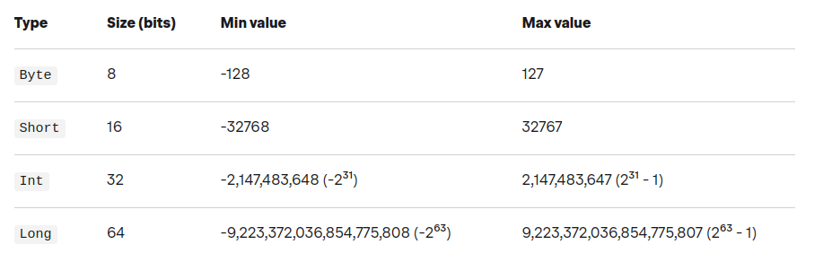
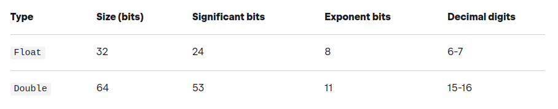
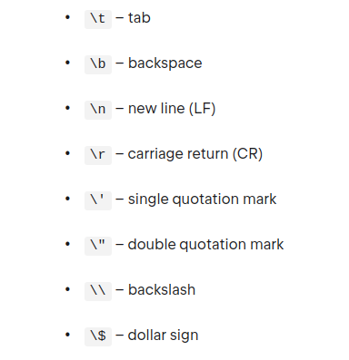

Apuntes de [Kotlin]¶
Kotlin es un lenguaje de programación de código abierto de tipo estático que se dirige a JVM, Android, JavaScript y Native. Está desarrollado por JetBrains. El proyecto se inició en 2010 y fue de código abierto desde muy temprano. El primer lanzamiento oficial 1.0 fue en febrero de 2016.
Características¶
Un lenguaje de programación se diseña generalmente con un propósito específico en mente. Este propósito puede ser cualquier cosa, desde servir a un entorno específico (por ejemplo, la web) hasta un determinado paradigma (por ejemplo, la programación funcional). En el caso de Kotlin el objetivo es construir un lenguaje productivo y pragmático, que tenga todas las características que un desarrollador necesita y que sea fácil de usar.
Kotlin fue diseñado inicialmente para trabajar con otros lenguajes de JVM, pero ahora ha evolucionado para ser mucho más: también funciona en el navegador y como una aplicación nativa.
Kotlin es multiparadigma, con soporte para paradigmas de programación orientada a objetos, procedimentales y funcionales, sin forzar el uso de ninguno de ellos. Por ejemplo, a diferencia de Java, puede definir funciones de nivel superior, sin tener que declararlas dentro de una clase.
- 100% interoperable con Java.
- 100% compatible con Java 6..., por lo que puede crear aplicaciones para la mayoría de los dispositivos Android.
- Se ejecuta en la JVM, puede transpilarse (traducirse) a JavaScript e incluso puede ejecutarse de forma nativa, con interoperabilidad con las bibliotecas C y Objective-C (macOs e iOS).
- No hay necesidad de terminar las frases con punto y coma
;. Los bloques de código están delimitados por corchetes{ }. - Soporte de primera clase para valores constantes y colecciones inmutables (ideal para programación paralela y funcional).
- Las funciones pueden ser elementos de nivel superior (es decir, no hay necesidad de poner todo dentro de una clase).
- Las funciones son ciudadanos de primera clase: pueden transmitirse como cualquier otro tipo y utilizarse como argumento de las funciones. Lambda (es decir, funciones anónimas) son muy compatibles con la biblioteca estándar.
- No hay una palabra clave
static, sino que hay mejores alternativas. - Clases de datos son clases especiales diseñadas para contener datos.
- Todo es una expresión:
if,for, etc... Todos pueden devolver valores. - La expresión
whenes como un interruptor con superpoderes.
Más información:
https://kotlinlang.org/docs/reference/comparison-to-java.html https://kotlinlang.org/docs/reference/server-overview.html https://kotlinlang.org/docs/reference/evolution/kotlin-evolution.html
Kotlin en línea de comandos¶
- Instalar el compilador desde línea de comandos desde aquí
- Compilar la aplicación usando el compilador de Kotlin:
$ kotlinc name.kt -include-runtime -d name.jar - Ejecutar el programa:
$ java -jar name.jar - Ejecutar la consola 'REPL':
$ kotlinc-jvm - Usar la línea de comandos para ejecutar scripts (.kts):
$ kotlinc -script name.kts [params] - Compilar una biblioteca sin la 'runtime' para ser usada en otros programas:
$ kotlinc name.kt -d name.jar - Ejecutar binarios producidos por el compilador de Kotlin:
$ kotlin -classpath name.jar HelloKt (HelloKt is the main class name inside the file named name.kt)
Más información: https://kotlinlang.org/docs/command-line.html
Sintaxis básica¶
El punto de entrada en un programa escrito en Kotlin (y en Java) es la función main(args: Array<String>). Esta función recibe un array que contiene los argumentos de la línea de comandos.
Aunque a partir de la versión 1.3 puedes declarar main sin ningún parámetro.
Las funciones y variables en Kotlin pueden declararse en un "nivel superior", es decir, no necesitan estar dentro de una clase, por tanto, directamente dentro de un paquete.
Si un archivo Kotlin contiene una sola clase (potencialmente con declaraciones de nivel superior relacionadas), su nombre debe ser el mismo que el nombre de la clase, con la extensión '.kt'. Si un archivo contiene varias clases, o solo declaraciones de nivel superior, el nombre debe describir lo que contiene el archivo en formato 'UpperCamelCase' (e.g. ProcessDeclarations.kt)
Kotlin sigue las convenciones de nomenclatura de Java. Los nombres de los paquetes se escriben siempre en minúsculas y sin guiones bajos (e.g. org.example.myproject)
Los nombres de las clases y los objetos se escriben en 'UpperCamelCase':
open class DeclarationProcessor { ... }
object EmptyDeclarationProcessor : DeclarationProcessor() { ... }
Los nombres de funciones, propiedades y variables locales en 'lowerCamelCase':
Los nombres de las constantes (propiedades marcadas con const) deben usar nombres en mayúsculas y separados por un guión bajo:
Variables y tipos básicos¶
https://kotlinlang.org/docs/basic-types.html#basic-types
En Kotlin, todo es un objeto en el sentido de que podemos llamar funciones y propiedades de miembro en cualquier variable. Algunos de los tipos como los números, los caracteres o los booleanos pueden tener una representación interna especial que se representa como valores primitivos en tiempo de ejecución, pero para el usuario se comportan como clases ordinarias.
La declaración de valores se realiza utilizando var o val:
- Los valores constantes se declaran como
valy son inmutables o 'read-only', es decir, que no se pueden reasignar. - Las variables se declaran como
vary son mutables, por lo que se le pueden asignar un nuevo valor pero únicamente del mismo tipo declarado.
La recomendación es crear valores constantes inmutables, que son más seguras en entornos 'multithreading' ya que no se pueden modificar y utilizar las variables mutables cuando sea necesario.
Este soporte de primera clase para los valores constantes es importante por una razón: la programación funcional. En la programación funcional, el uso de los valores constantes permiten algunas optimizaciones que aumentan el rendimiento. Por ejemplo, los cálculos pueden ser paralelos ya que existe una garantía de que el valor no cambiará entre dos ejecuciones paralelas, dado que no puede cambiar.
val fooVal = 10 // val es inmutable y no podrá ser reutilizada
val otherVal
otherVal = "My Value" // Podemos declarar la variable 'val' en una línea y asignarle valor posteriormente. Sigue siendo una sola asignación.
var fooVar = 10
fooVar = 20 // Se le puede asignar un nuevo valor pero únicamente del mismo tipo.
En la mayoría de los casos, Kotlin puede determinar o inferir cuál es el tipo de una variable, por lo que no tenemos que especificarla explícitamente. Cuando la variable no se inicialice deberemos indicar explícitamente el tipo de la variable ya que Kotlin no puede inferir el tipo si no se inicializa.
val foo: Int = 7
val bar = 10 // Kotlin infiere automáticamente el tipo
val hello: String // Si no se inicializa hay que especificar el tipo
Numbers¶
https://kotlinlang.org/docs/numbers.html
Kotlin proporciona los tipos Byte, Short, Int y Long para enteros.

Y los tipos Float y Double para números en coma flotante:

val double: Double = 64.0 // 64 bits
val float: Float = 32.0F // or 32f (32 bits)
val long: Long = 64L // 64 bits
val int: Int = 32 // 32 bits
val short: Short = 16 // 16 bits
val byte: Byte = 8 // 8 bits
val hexadecimal: Int = 0x16
val binary: Int = 0b101
val char: Char = 'a'
Todas las variables inicializadas con un entero no deben exceder el tamaño máximo de Int ya que Kotlin infiere el tipo Int si no se especifica explícitamente el tipo o se añade el apéndice 'L' al valor. En el caso de números en coma flotante, Kotlin infiere el tipo Double si no se indica el tipo explícitamente o se marca el valor en coma flotante con el apéndice 'F'.
val a = 1 // Kotlin infiere el tipo 'Int'
val b = 1L // Kotlin infiere el tipo 'Long'
val c = 3.14 // Kotlin infiere el tipo 'Double'
val d = 2.7123F // Kotlin infiere el tipo 'Float'
A diferencia de Java, en Kotlin todos los tipos son objetos y por tanto no hay 'wrappers' u objetos envoltorio tipo Integer, Double, etc...
Los guiones bajos se pueden utilizar para hacer que los números grandes sean más legibles:
La conversión debe ser invocada explícitamente. Hay conversiones desde un tipo al resto de tipos:
toByte(): BytetoShort(): ShorttoInt(): InttoLong(): LongtoFloat(): FloattoDouble(): DoubletoChar(): Char
Characters¶
https://kotlinlang.org/docs/characters.html
Los caracteres no son números en Kotlin, a diferencia de Java. En Kotlin los caracteres se representan con el tipo Char:
Los literales de carácter se escriben con comillas simples como por ejemplo 'a'. Los caracteres especiales se escapan con la barra invertida '\'. Están soportadas las siguientes secuencias de escape: \t, \b, \n, \r, \', \", \\, \$.

Podemos convertir de forma explícitia un carácter en un número de tipo Int:
fun decimalDigitValue(c: Char): Int {
if (c !in '0'..'9')
throw IllegalArgumentException("Out of range")
return c.toInt() - '0'.toInt() // Explicit conversions to numbers
}
Booleanos¶
El tipo Boolean representa objetos booleanos que pueden tener dos valores:true y false.
Boolean tiene un tipo nulable Boolean? que también acepta valores null.
Las operaciones que pueden ser con booleanos son:
||– disyunción (lógica O)&&– conjunción (lógica Y)!– negación (lógica NO)
|| y && trabajan con evaluación perezosa,es decir, no evalúa todos los operandos al lado de las operaciones. Evaluan el primero, y el segundo solo si es necesario.
val myTrue: Booleano = verdadero
val myFalse: Booleano = falso
val boolNull: Booleano? = nulo
println(myTrue || myFalse)
println(myTrue && myFalse)
println(!myTrue)
Strings¶
https://kotlinlang.org/docs/strings.html
Las cadenas son secuencias de caracteres inmutables y se representan con el tipo String de manera similar a Java. Las cadenas se crean usando las comillas dobles. El escapado de caracteres se hace con una barra invertida '\'.
val fooString = "My String Is Here!"
val barString = "Printing on a new line?\nNo Problem!"
val bazString = "Do you want to add a tab?\tNo Problem!"
println(fooString)
println(barString)
println(bazString)
println("John Doe"[2]) // => h
println("John Doe".startsWith("J")) // => true
Se puede acceder a los elementos de una cadena como si fuera un array (e.g. s[i]) e iterar con un bucle tipo for:
Se puede utilizar el operador + para concatenar cadenas entre sí y con valores de otro tipo siempre y cuando uno de los elementos de la expresión sea una cadena:
Una cadena sin formato o 'raw string' está delimitada por una comilla triple ("""). Las cadenas sin formato pueden contener nuevas líneas y cualquier otro carácter. Estas cadenas sin formato también tiene soporte para las 'string templates':
val fooRawString = """
fun helloWorld(val name : String) {
println("Hello, world!")
}
val hello = $who
val result = ${2 + 2}
"""
Con la función trimMargin() podemos eliminar los espacios en blanco:
val text = """
|Tell me and I forget.
|Teach me and I remember.
|Involve me and I learn.
|(Benjamin Franklin)
""".trimMargin()
String templates¶
https://kotlinlang.org/docs/strings.html#string-templates
Un literal de cadena puede contener expresiones de plantilla o 'template expressions', que son fragmentos de código que será evaluado y cuyo resultado será concatenado en la cadena. Son una forma simple y efectiva de incrustar valores, variables o incluso expresiones dentro de una cadena.
Una expresión de plantilla comienza con un signo de dólar ($) y consisten en un nombre de una variable (por ejemplo $i) o en una expresión (como por ejemplo ${name.length}) en cuyo caso se utilizan llaves ({}):
val name = "John Doe"
println("$name has ${name.length} characters") // => John Doe has 8 characters
val age = 40
println("You are ${if (age > 60) "old" else "young"}") // => You are young
Las plantillas son compatibles tanto dentro de cadenas sin procesar como dentro de cadenas escapadas. En caso de necesitar representar el literal del dólar en una cadena sin escapar se utiliza esta sintaxis:
Arrays¶
https://kotlinlang.org/docs/arrays.html
Una matriz está representada por la clase Array y es invariante, por lo que, por ejemplo, no se puede asignar un Array<String> a un tipo de variable Array<Any>.
En Kotlin, podemos crear una matriz de elementos del mismo tipo o de distinto tipo utilizando la función de biblioteca arrayOf() y pasándole los elementos a añadir:
Podemos forzar la creación de arrays del mismo tipo. De esta forma el compilador comprobará el tipo de los elementos que se añaden y evitará que se añadan elementos de tipos no válidos:
La biblioteca estándar de Kotlin provee funciones para crear arrays de tipos primitivos como intArrayOf(), longArrayOf(), charArrayOf(), doubleArrayOf(), etc... Cada una de estas funciones devuelven una instancia de su equivalente en Kotlin como IntArray, LongArray, CharArray, DoubleArray, etc...:
Para mejorar la eficiencia y rendimiento del código, cuando se utilicen tipos primitivos hay que utilizar las funciones intArrayOf(), longArrayOf(), etc.. en vez de arrayOf() para así evitar el coste asociado a las operaciones de 'boxing'/'unboxing'.
Alternativamente, podemos crear una matriz a partir de un tamaño inicial y una función, que se utiliza para generar cada elemento usando el constructor Array():
val allCards = Array(12, { i -> i + 1 })
println("${allCards.first()} - ${allCards.last()}") // => 1 - 12
Iterando sobre la matriz con indices:
Otra forma posible de iterar es usando la función withIndex():
Packages¶
https://kotlinlang.org/docs/packages.html
La palabra clave package funciona de la misma manera que en Java. El nombre del paquete se usa para construir el "Fully Qualified Name" (FQN) de una clase, objeto, interfaz o función.
Todo el contenido (como clases y funciones) de un fichero fuente están contenidos en el paquete declarado. Los nombres de los paquetes se escriben en minúscula y sin guiones bajos:
En el ejemplo, el FQN de la clase será com.example.kotlin.MyClass.
Dado que podemos tener 'top-level functions' como la función saySomething() del ejemplo, el FQN de esta función será com.example.kotlin.saySomething.
Si no se especifica un paquete, el contenido del fichero fuente pertenece al paquete 'default'.
Imports¶
https://kotlinlang.org/docs/packages.html#imports
En Kotlin, usamos la declaración de importación para permitir que el compilador localice las clases e interfaces, propiedades, enumeraciones, funciones y objetos que se importarán.
En Java, por otro lado, solo está permitido importar clases o interfaces.
// 'Bar' esta disponible en el código
import foo.Bar
// Si existe cierta ambigüedad podemos usar la palabra clave 'as'
import foo.Bar
import bar.Bar as bBar
// Todo el contenido de 'foo' está disponible
import foo.*
Por defecto, al igual que en Java, el compilador importa de forma implícita una serie de paquetes y por tanto están disponibles de forma automática:
- kotlin.*
- kotlin.annotation.*
- kotlin.collections.*
- kotlin.comparisons.*
- kotlin.io.*
- kotlin.ranges.*
- kotlin.sequences.*
- kotlin.text.*
Additional packages are imported depending on the target platform:
- JVM:
- java.lang.*
- kotlin.jvm.*
- JS:
- kotlin.js.*
Comentarios¶
Control de flujo y bucles¶
https://kotlinlang.org/docs/control-flow.html#control-flow-if-when-for-while
Kotlin tiene 4 construcciones de control de flujo: if, when, for y while. if y when son expresiones, por lo que devuelven un valor; for y when son declaraciones, por lo que no devuelven un valor. if y when también se pueden utilizar como sentencias, es decir, se pueden utilizar de forma autónoma y sin devolver un valor.
Un bucle for puede usarse con cualquier elemento que proporcione un iterador como rangos, colecciones, etc...:
for (c in "hello") {
println(c)
}
for (i in 1..3) {
println(i)
}
for (i in 6 downTo 0 step 2) {
println(i)
}
Los bucles while y do-while funcionan de la misma manera que en otros lenguajes:
La instrucción if y if..else funciona igual que en Java. Además, en Kotlin los bloques if se pueden utilizar como una expresión que devuelve un valor. Por este motivo el operador ternario 'condition ? then: else' no es necesario en Kotlin:
// Traditional usage
var max = a
if (a < b) max = b
// With else
var max: Int
if (a > b) {
max = a
} else {
max = b
}
// As expression
val max = if (a > b) a else b
// With blocks
// returns a or 5
var top = if (a > 5) {
println("a is greater than 5")
a
} else {
println("5 is greater than a")
5
}
Los bloques when se pueden usar como una alternativa a las cadenas if-else-if o en substitución de los switch. Si no se proporciona ningún argumento, las condiciones de la rama son simplemente expresiones booleanas, y una rama se ejecuta cuando su condición es verdadera:
when {
x.isOdd() -> print("x is odd")
x.isEven() -> print("x is even")
else -> print("x is funny")
}
La instrucción when se puede usar con un argumento. Si ninguna de las opciones coincide con el argumento, se ejecuta la opción del bloque else:
when (x) {
1 -> print("x == 1")
2 -> print("x == 2")
else -> {
println("none of the above") // Nótese el uso de llaves para delimitar el bloque de código
}
}
La instrucción when se puede utilizar como una expresión que devuelve un valor. En este caso el bloque else es obligatorio. De hecho, la única excepción a esta regla es si el compilador puede garantizar que siempre devuelve un valor. Por lo tanto, si las ramas normales cubren todos los valores posibles, entonces no hay necesidad de una rama else:
val result = when (i) {
0, 21 -> "0 or 21"
in 1..20 -> "in the range 1 to 20"
else -> "none of the above"
}
println(result)
val check = true
val result = when(check) { // All results are covered
true -> println("it's true")
false -> println("it's false")
}
Se pueden utilizar expresiones arbitrarias, y no solo constantes, como condiciones en los bloques:
Si muchos casos deben manejarse de la misma manera, las condiciones de la rama pueden combinarse con una coma:
También podemos verificar si un valor está dentro in o no está dentro !in de un rango o una colección:
when (x) {
in 1..10 -> print("x is in the range")
in validNumbers -> print("x is valid")
!in 10..20 -> print("x is outside the range")
else -> print("none of the above")
}
Funciones¶
https://kotlinlang.org/docs/functions.html
Las funciones se declaran usando la palabra clave 'fun'. Los nombres de las funciones empiezan con minúscula. Los parámetros de la función se especifican entre paréntesis después del nombre de la función y tienen la forma 'name: type'. El tipo de cada parámetro debe especificarse explícitamente y no puede omitirse.
Los parámetros de la función pueden tener opcionalmente un valor por defecto, que se utilizará en caso de se omita el argumento al invocar la función. El tipo de retorno de la función, si es necesario, se especifica después de los parámetros:
fun hello(name: String = "world"): String { // valor por defecto
return "Hello, $name!"
}
hello("foo") // => Hello, foo!
hello(name = "bar") // => Hello, bar!
hello() // => Hello, world!
fun bye(bye: String = "Bye", name: String): String {
return "$bye, $name!!"
}
bye(name = "John", bye = "Good bye") // => Good bye, John!!
bye(name = "John") // => Bye, John!!
Si un parámetro por defecto precede a un parámetro sin valor predeterminado, el valor por defecto solo se puede usar llamando a la función con argumentos con nombre:
Dado que Java no admite valores de parámetros por defecto en los métodos, deberá especificar todos los valores de parámetros explícitamente cuando llame a una función de Kotlin desde Java. Kotlin nos proporciona la funcionalidad para facilitar las llamadas de Java al anotar la función Kotlin con '@JvmOverloads'. Esta anotación le indicará al compilador de Kotlin que genere las funciones sobrecargadas de Java para nosotros.
@JvmOverloads
fun calCircumference(radius: Double, pi: Double = Math.PI): Double = (2 * pi) * radius
// En Java
double calCircumference(double radius, double pi);
double calCircumference(double radius);
Cuando una función no devuelve ningún valor significativo, su tipo de devolución por defecto es Unit. En ese caso indicar el tipo de retorno es opcional. El tipo Unit es un objeto en Kotlin que es similar a los tipos void en Java y C.
fun hello(name: String): Unit {
print("Hello $name")
}
fun sayHello(name: String) { // compila ya que el compilador infiere el tipo 'Unit'
print("Hello $name")
}
Los parámetros con nombre permiten código más legible al nombrar los parámetros que se pasan a una función cuando se invoca. Una vez que se utiliza un nombre en un parámetro, el resto de parámetros también deben asignarse con nombre:
fun area(width: Int, height: Int): Int {
return width * height
}
area(10, 12)
area(width = 10, height = 12) // código más legible
area(height = 12, width = 10) // podemos cambiar el orden
area(10, height = 12) // argumento por posición y argumentos con nombre
area(width = 10, 12) // ¡incorrecto! no se permiten argumentos con nombre antes de argumentos por posición
fun bar(k: Int, m: Long = 1L, j: Boolean = true) = println("$k - $m - $j")
// Una vez que un parámetro ha sido nombrado, todos los siguientes parámetros deben ser nombrados
bar(10) // => Se omiten los parámentros por defecto
bar(15, 30L)
bar(20, 2L, true)
bar(m = 30L, j = false, k = 10)
bar(k = 10, m = 20L, j = true)
bar(5, m = 2L, j = true)
bar(6, 1L, j = true)
Cuando se invoca una función con argumentos posicionales y con nombre, todos los argumentos posicionales deben colocarse antes del primero argumento con nombre. Por ejemplo, la llamada f(1, y = 2) está permitida, pero f(x = 1, 2) no está permitida.
Para pasar un número variable de argumentos a una función podemos usar la palabra clave 'vararg' delante del nombre de una variable. Por tanto la función aceptará una lista de parámetros separados por comas que el compilador envolverá en una array. Por tanto, dentro de la función accederemos a los parámetros mediante la notación de array.
Este tipo de parámetros se puede combinar con otros parámetros. Normalmente el parámetro 'vararg' será el último de la lista. Si hay otros parámetros después de 'vararg', deberán usarse parámetros con nombre:
fun varargExample(vararg names: Int) {
println("Argument has ${names.size} elements")
}
varargExample() // => Argument has 0 elements
varargExample(1) // => Argument has 1 elements
varargExample(1, 2, 3) // => Argument has 3 elements
fun car(vararg model: String, year: Int) {}
car("Audi", "A6", year = 2005) // parámetros con nombre después de 'vararg'
Para utilizar un array para suministrar un número variable de argumentos se utiliza el operador '*' también llamado 'spread operator' delante del nombre de la variable del array:
val intArray = intArrayOf(1, 2, 3, 4)
val array = Array(5, { i -> i + 1 })
varargExample(*intArray) // => Argument has 4 elements
varargExample(*array.toIntArray()) // => Argument has 5 elements
Cuando una función consiste en una sola expresión, se pueden omitir los paréntesis. El cuerpo se especifica después de un símbolo '=':
Declarar explícitamente el tipo de retorno de una función cuando es una expresión es opcional cuando puede ser inferido por el compilador o cuando el tipo de retorno es 'Unit'. Cuando el cuerpo de una función es un bloque hay que especificar el tipo de retorno ya que el compilador no puede inferirlo:
fun even(x: Int) = x % 2 == 0 // Optional
fun printHello(name: String?) { // 'Unit'
if (name != null)
println("Hello ${name}")
else
println("Hi there!")
// `return Unit` or `return` is optional
}
A veces queremos devolver múltiples valores desde una función. Una forma es usar el tipo 'Pair' de Kotlin. Esta estructura incluye dos valores a los que luego se puede acceder. Este tipo de Kotlin puede aceptar cualquier tipo que suministre a su constructor. Y, lo que es más, los dos tipos ni siquiera necesitan ser iguales. Kotlin también provee el tipo 'Triple' que retorna tres valores:
fun getNumbers(num: Int): Pair<Int?, Int?> {
require(num > 0, { "Error: num is less than 0" })
return Pair(num, num * 2)
}
val(num, num2) = getNumbers(10) // destructuring
En Kotlin, podemos hacer que la creación de una instancia 'Pair' sea más compacta y legible utilizando la función 'to', que es una función 'infix' en lugar del constructor de 'Pair'.
val nigeriaCallingCodePair = 234 to "Nigeria"
val nigeriaCallingCodePair2 = Pair(234, "Nigeria") // Same as above
Extension functions¶
Las 'extension functions' son una forma de agregar nuevas funcionalidades a una clase sin tener que heredar de dicha clase. Esto es similar a los métodos de extensión de C#. Una función de extensión se declara fuera de la clase que quiere extender. En otras palabras, también es una 'top-level function'. Junto con las funciones de extensión, Kotlin también admite propiedades de extensión.
Para crear una 'extension function', debe prefijar el nombre de la clase que está extendiendo antes del nombre de la función. El nombre de la clase o el tipo en el que se define la extensión se denomina tipo de receptor, y el objeto receptor es la instancia de clase o el valor concreto sobre el que se llama a la función de extensión.
fun String.remove(c: Char): String { // 'String' es el tipo receptor
return this.filter { it != c } // 'this' corresponde al objeto receptor
}
println("Hello, world!".remove('l')) // => Heo, word! // "Hello World" es el objeto receptor
En caso de que una 'extension function' tenga la misma firma (mismo nombre y misma lista de parámetros) que una función miembro, es decir, una función de la clase, el compilador invocará antes la función miembro que la función de extensión aunque no se generará ningún error de compilación:
class C {
fun foo() { println("member") }
}
fun C.foo() {
println("extension")
}
fun C.foo(i: Int) {
println("extension & overrided")
}
C().foo() // => member
C().foo(5) // => extension & overrided
Top-level functions¶
Las funciones de nivel superior son funciones que se definen fuera de cualquier clase, objeto o interfaz. Esto significa que son funciones a las que llama directamente, sin la necesidad de crear ningún objeto o llamar a ninguna clase. Dado que Java no soporta este tipo de funciones el compilador de Kotlin genera una clase con métodos estáticos. Este tipo de funciones son especialmente útiles para crear funciones de utilidad o de ayuda.
// Code defined inside a file called 'UserUtils.kt'
@file:JvmName("UserUtils")
package com.example.project.utils
fun checkUserStatus(): String {
return "online"
}
High-Order Functions¶
Las funciones en Kotlin son de primera clase, lo que significa que pueden ser almacenadas en variables y estructuras de datos, pasadas como argumentos y devueltas desde otras funciones de orden superior. Puede operar con funciones de cualquier manera que sea posible para otros valores no funcionales.
Para facilitar esto, Kotlin, como lenguaje de programación estáticamente tipado, utiliza una familia de tipos de función para representar funciones y proporciona un conjunto de construcciones de lenguaje especializadas, tales como expresiones lambda.
Una 'high-order function' o función de orden superior es una función que puede tomar funciones como parámetros y/o devolver una función como tipo de retorno.
// Función con dos parámetros, el segundo de ellos es una función
fun foo(str: String, fn: (String) -> String): Unit {
val applied = fn(str)
println(applied)
}
foo("Hello", { it.reversed() }) // => olleH
// Esta función de orden superior devuelve una función
fun isPositive(n: Int): (Int) -> Boolean {
return { n > 0 } // return a function. Instead 'return value' we have 'return { function }'
}
// Esta función de orden superior devuelve una función de forma más compacta
fun modulo(k: Int): (Int) -> Boolean = { it % k == 0 }
// fun modulo(k: Int): (Int) -> Boolean = { n:Int -> n % k == 0 } //igual que la definición de arriba.
val evens = listOf(1, 2, 3, 4, 5, 6).filter(modulo(2)) // => [2, 4, 6]
// Asignar la función a una variable
val isEven: (Int) -> Boolean = modulo(2)
listOf(1, 2, 3, 4).filter(isEven) // => [2, 4]
listOf(5, 6, 7, 8).filter(isEven) // => [6, 8]
Functions types & Lambdas¶
Un tipo función es un tipo que consta de una firma de función, es decir, dos paréntesis que contiene la lista de parámetros (que son opcionales) y un tipo de retorno. Ambas partes están separadas por el operador '->'.
Cuando se define un tipo función, siempre se debe indicar explícitamente el tipo de retorno. Cuando se declaran funciones normales que devuelven Unit, se puede omitir el tipo de retorno ya que el compilador lo infiere, pero no se puede omitir en los tipos función. Además, debe poner los paréntesis para los parámetros, incluso cuando el tipo función no acepta ningún parámetro.
fun executor(action:() -> Unit) {
action()
}
// 'action' es el nombre del parámetro y su tipo es '() -> Unit' que es una función.
// Por tanto el tipo de 'action' es un tipo función.
- Ejemplo de un tipo función que no toma parámetros y devuelve 'Unit':
() -> Unit - Ejemplo de un tipo función que no toma parámetros y devuelve un String:
() -> String - Ejemplo de un tipo función que toma un String y no devuelve nada:
(String) -> Unit - Ejemplo de un tipo función que toma dos parámetros y no devuelve nada:
(String, Float) -> Unit
Debido a que un tipo función es solo un tipo, significa que puede asignar una función a una variable, puede pasarla como un argumento a otra función o puede devolverla desde una función tal y como suceden en las `high-order functions':
val saySomething: (String) -> Unit = { x -> println(x) }
saySomething("Good morning") // => Good morning
Una forma de instanciar una función tipo es usando el operador '::'. También podemos usar este operardor para pasar un tipo función como parámetro de otra función especificando su nombre con el operador y sin utilizar los paréntesis:
fun businessEmail(s: String): Boolean {
return s.contains("@") && s.contains("business.com")
}
isAnEmail(::businessEmail) // Invocar una 'high-order function' pasándole otra función por su nombre
fun tell(text: String) {
println(text)
}
var saySomething: (String) -> Unit // La variable 'saySomething' es una variable de tipo función
saySomething = ::tell // instanciar el tipo función y asignarlo a la variable 'saySomething'
saySomething("Hello") //=> Hello
En particular, una lambda es una función literal: una función anónima que no se declara pero se usa directamente como una expresión.
Básicamente, una lambda es un bloque de código que se puede pasar como cualquier otro literal (por ejemplo, simplemente como una cadena literal "una cadena"). La combinación de estas características permite a Kotlin soportar la programación funcional básica.
En el ejemplo una variable 'sum' de tipo función y a la que le asignamos directamente una función 'lambda' con dos parámetros:
// Asignando una función 'lambda'
val sum: (Int, Int) -> Int = { x, y -> x + y }
sum(10, 20) // => 30
// Equivalente usando el operador '::'
fun operation(x: Int, y: Int): Int {
return x + y
}
val sum: (Int, Int) -> Int = ::operation
sum(10, 20) // => 30
En Kotlin, por convención si una función 'lambda' tiene solo un parámetro, su declaración puede omitirse (junto con ->). El nombre del único parámetro será 'it'.
val isNegative: (Int) -> Boolean = { it < 0 } // este literal es del tipo '(it: Int) -> Boolean'
isNegative(-5) // => true
Otra convención es que si el último parámetro de una función acepta una función, una expresión 'lambda' que es pasada como el argumento correspondiente se puede colocar fuera de los paréntesis:
// lambda expression inside parentheses
val upperCaseLetters = "Hello World".filter({ it.isUpperCase() })
// lambda outside parentheses
val lowerCaseLetters = "Hello World".filter { it.isLowerCase() }
println("$upperCaseLetters - $lowerCaseLetters") // => HW - elloorld
El siguiente ejemplo tenemos una función de orden superior que acepta una función lambda { (String) -> Boolean } como parámetro. Se expresa como "acepta una función 'from String to Boolean'":
// El parámetro 'email' podemos usarlo como una función que acepta una cadena y devuelve un booleano.
fun isAnEmail(email: (String) -> Boolean) {
email("myemail@example.com")
}
isAnEmail({ s: String -> s.contains("@") }) // forma completa
isAnEmail { s: String -> s.contains("@") } // Los paréntesis son opcionales
isAnEmail { it.contains("@") } // Uso de 'it'
Para parámetros no utilizados se utiliza el operador '_':
val unusedSecondParam: (String, Int) -> Boolean = { s, _ ->
s.length > 10
}
unusedSecondParam("Hello World", 0) // 0 is unused
Anonymous functions¶
Una función anónima se parece mucho a una declaración de función normal, excepto que se omite su nombre. Su cuerpo puede ser una expresión o un bloque:
// Función anónima cuyo cuerpo es una expresión
fun(x: Int, y: Int): Int = x + y
// Función anónima con bloque
fun(x: Int, y: Int): Int {
return x + y
}
El tipo de los parámetros de una función anónima pueden omitirse si se pueden inferir por el contexto:
La inferencia de tipo de retorno para funciones anónimas funciona igual que para las funciones normales: el tipo de retorno se deduce automáticamente para funciones anónimas con un cuerpo de expresión y debe especificarse explícitamente (o se supone que es 'Unit') para funciones anónimas con un cuerpo de bloque.
Closures¶
Un 'closure' es una función que tiene acceso a variables y parámetros que se definen en un ámbito externo. A diferencia de Java, las variables 'capturadas' pueden ser modificadas.
fun printFilteredNamesByLength(length: Int) {
val names = arrayListOf("Adam", "Andrew", "Chike", "Kechi")
val filterResult = names.filter {
it.length == length // 'length' se define fuera del ámbito de la lambda
}
println(filterResult)
}
Local or Nested Functions¶
Para llevar más lejos la modularización de programas, Kotlin nos proporciona funciones locales, también conocidas como funciones anidadas o 'nested functions'. Una función local es una función que se declara dentro de otra función.
Podemos hacer que nuestras funciones locales sean más concisas al no pasarles parámetros explícitamente. Esto es posible porque las funciones locales tienen acceso a todos los parámetros y variables de la función de cierre.
fun printCircumferenceAndArea(radius: Double): Unit {
fun calCircumference(radius: Double): Double = (2 * Math.PI) * radius
val circumference = "%.2f".format(calCircumference(radius))
fun calArea(radius: Double): Double = (Math.PI) * Math.pow(radius, 2.0)
val area = "%.2f".format(calArea(radius))
print("The circle circumference of $radius radius is $circumference and area is $area")
}
Infix Functions¶
Las funciones marcadas con la palabra clave 'infix' se pueden llamar usando la notación 'infix' (omitiendo el punto y los paréntesis para la llamada). Estas funciones deben cumplir los siguientes requisitos:
- Tienen que ser miembros de una clase o funciones de extensión
- Deben tener un solo parámetro
- Este parámetro no será
'vararg'ni tener valor por defecto
Para invocar una función 'infix' en Kotlin no necesitamos usar la notación de puntos ni los paréntesis. Hay que tener en cuenta que las funciones 'infix' siempre requieren que se especifiquen tanto el receptor como el parámetro. Cuando se invoca un método en el receptor actual, como por ejemplo dentro de la clase, se necesita usar explicitamente la notación 'this'. A diferencia de las llamadas a métodos regulares, no se puede omitir.
class Student {
var kotlinScore = 0.0
infix fun addKotlinScore(score: Double): Unit {
this.kotlinScore = kotlinScore + score
}
fun build() {
this addKotlinScore 95.0 // Correcto
addKotlinScore(95.0) // Correcto
addKotlinScore 95.0 // Incorrectp: hay que especificar el receptor ('this')
}
}
val student = Student()
student addKotlinScore 95.00 // Invocando la función usando la notación 'infix'
student.addKotlinScore(95) // Invocando la función con notación normal
Inline functions¶
El compilador de Kotlin crea una clase anónima en versiones anteriores de Java cuando creamos o utilizamos expresiones lambda. Esto genera una sobrecarga, además de la carga de memoria que se genera cuando en una función lambda hace uso de variables de fuera de su entorno como en las 'closures'.
Para evitar esta sobrecarga tenemos el modificador 'inline' para las funciones. Una 'High-Order function' con el modificador 'inline' se integrará durante la compilación del código. En otras palabras, el compilador copiará la 'lambda' (o función literal) y también el cuerpo de la función de orden superior y los pegará en el sitio de la llamada.
Con este mecanismo, nuestro código se ha optimizado significativamente, no más creación de clases anónimas o asignaciones de memoria extra. Por otro lado el uso de 'inline' hace que el compilador genere ficheros bytecode más grandes. Por esta razón, se recomienda encarecidamente que solo se incluyan funciones de orden superior más pequeñas que acepten lambda como parámetros.
Reference¶
- https://kotlinlang.org/docs/reference/
- https://code.tutsplus.com/series/kotlin-from-scratch--cms-1209
- https://www.packtpub.com/application-development/programming-kotlin
- https://learnxinyminutes.com/docs/kotlin/
- https://gist.github.com/dodyg/5823184
- https://gist.github.com/dodyg/5616605
- https://github.com/Zhuinden/guide-to-kotlin
- https://superkotlin.com/kotlin-mega-tutorial/
- https://revilofe.github.io/IESRA-DAM-Prog/#/
Fuente¶
License¶
 Esta obra está bajo una licencia de Creative Commons Reconocimiento-Compartir Igual 4.0 Internacional.
Esta obra está bajo una licencia de Creative Commons Reconocimiento-Compartir Igual 4.0 Internacional.